Building — Community center
Vertical Village
A community center with an emphasis on its makerspace and public programs.
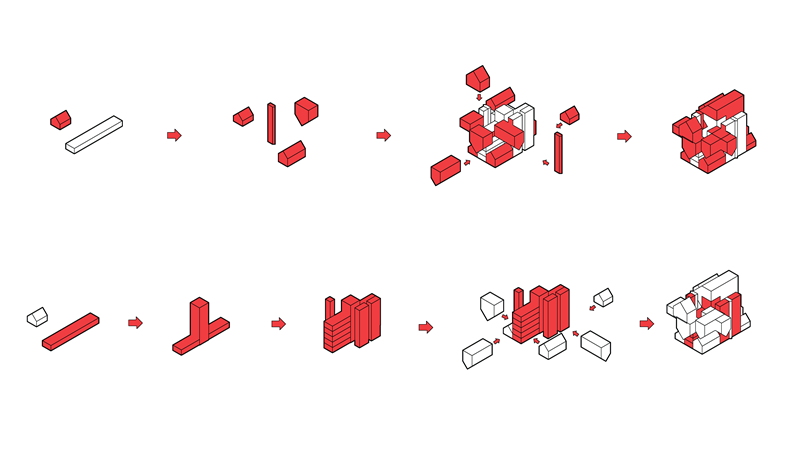
Massing diagrams. Full size: Massing diagrams (5334 × 3000, 125 KB)
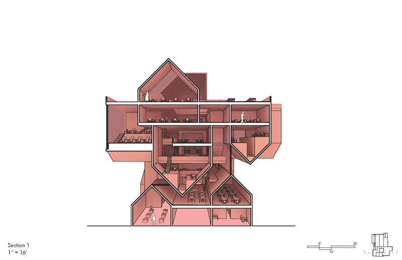
Section 1. Full size: Section 1 (2312 × 1496, 576 KB)
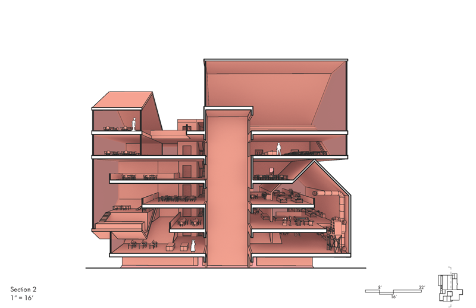
Section 2. Full size: Section 2 (2329 × 1507, 976 KB)
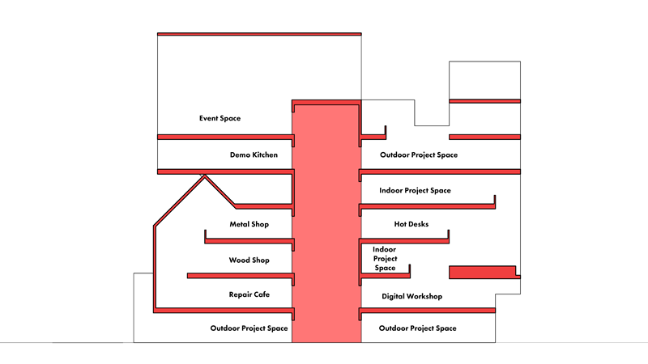
Program diagram. Full size: Program diagram (5334 × 3000, 74 KB)
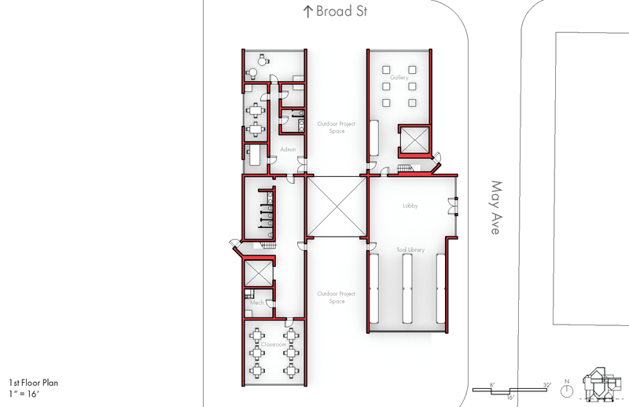
1st floor plan. Full size: 1st floor plan (1836 × 1188, 539 KB)
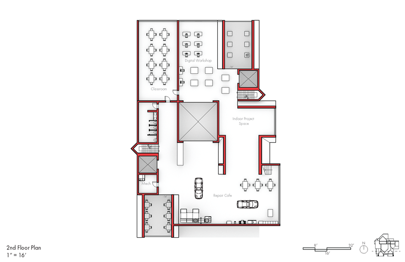
2nd floor plan. Full size: 2nd floor plan (1836 × 1188, 530 KB)
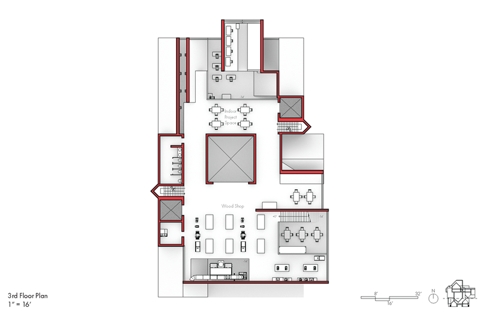
3rd floor plan. Full size: 3rd floor plan (1717 × 1111, 504 KB)
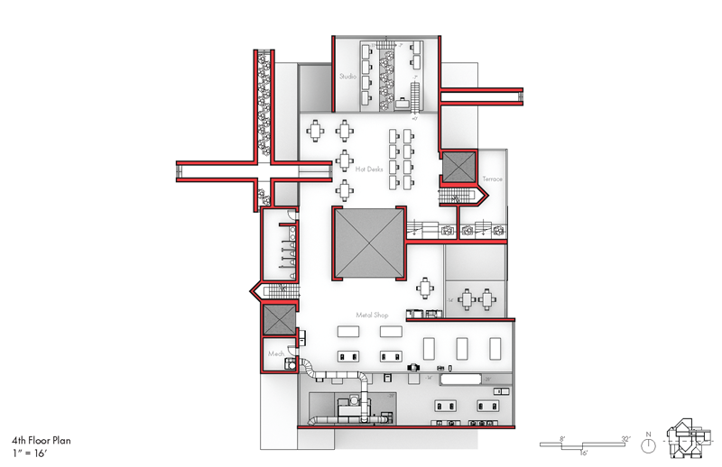
4th floor plan. Full size: 4th floor plan (1717 × 1111, 544 KB)
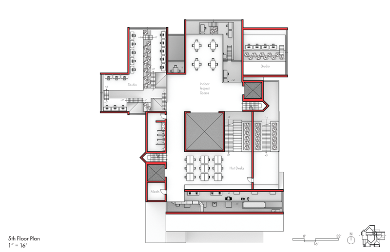
5th floor plan. Full size: 5th floor plan (1717 × 1111, 594 KB)
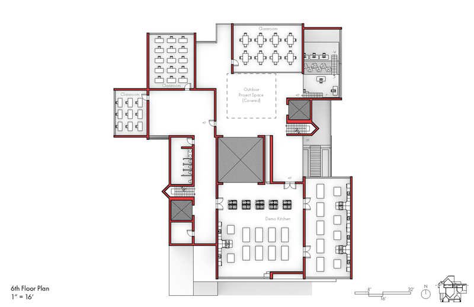
6th floor plan. Full size: 6th floor plan (1717 × 1111, 596 KB)
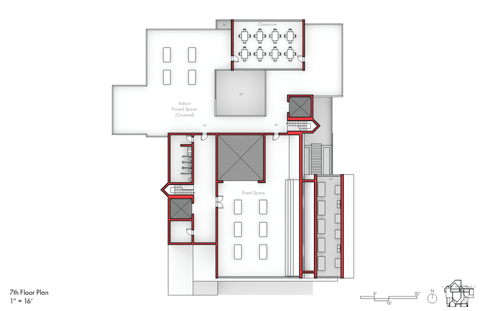
7th floor plan. Full size: 7th floor plan (1717 × 1111, 625 KB)